Module: color_grading
Documentation last edited: October 22, 2025 at 10:46 UTC
Description
Модуль цветокоррекции, который применяет цветокоррекцию через LUT-текстуру на экране. Имеет несколько удобных функций для работы внутри редактора.
Пример использования
ColorGrading.change_LUT("sin_city2")
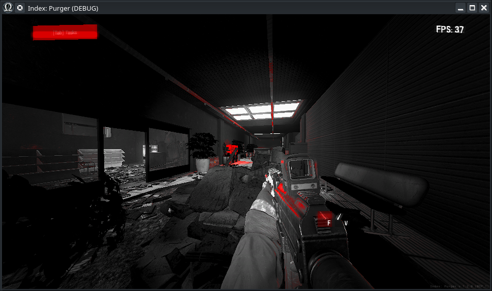
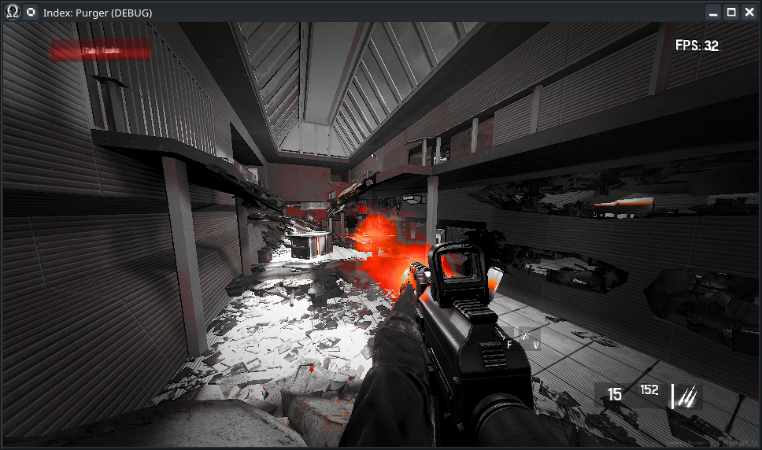
Да, это просто как дважды два, тут нечего особо добавить, кроме... Тебе возможно интересно: Как именно сделать свою собственную LUT для цветокоррекции?
Это чистая LUT, которая не влияет на цвета:
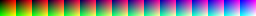
Вот более холодная версия этой LUT:
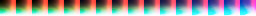
А вот версия этой LUT, которая выделяет красные цвета:
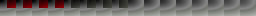
Как ты видишь, главное в LUT (Look-Up Texture) - это просто массив цветов, который может использоваться рендером игры. Вот пошаговое руководство, как сделать её самостоятельно.
Во-первых, найди место, которое ты хотел бы использовать как "образец". Я предполагаю, что ты будешь делать цветокоррекцию, которая *подходит* под конкретное место, но, в любом случае, просто найди место.
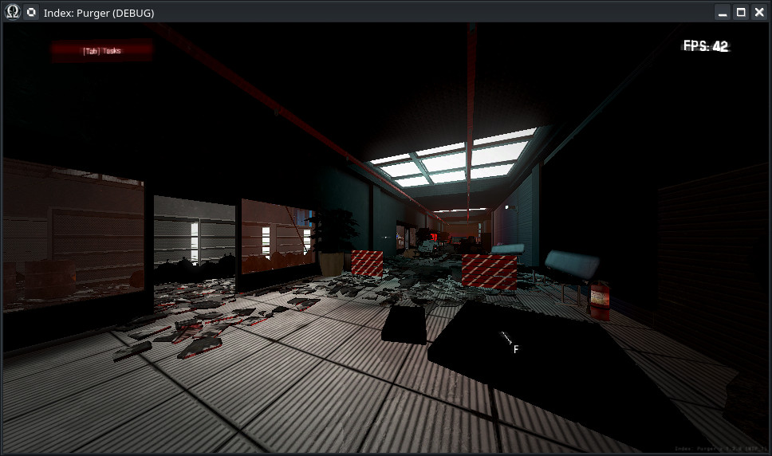
Открой меню разработчика (с помощью консольной команды
dev_menu
) и найди кнопку "Take LUT Screenshot" в инструментах отладки
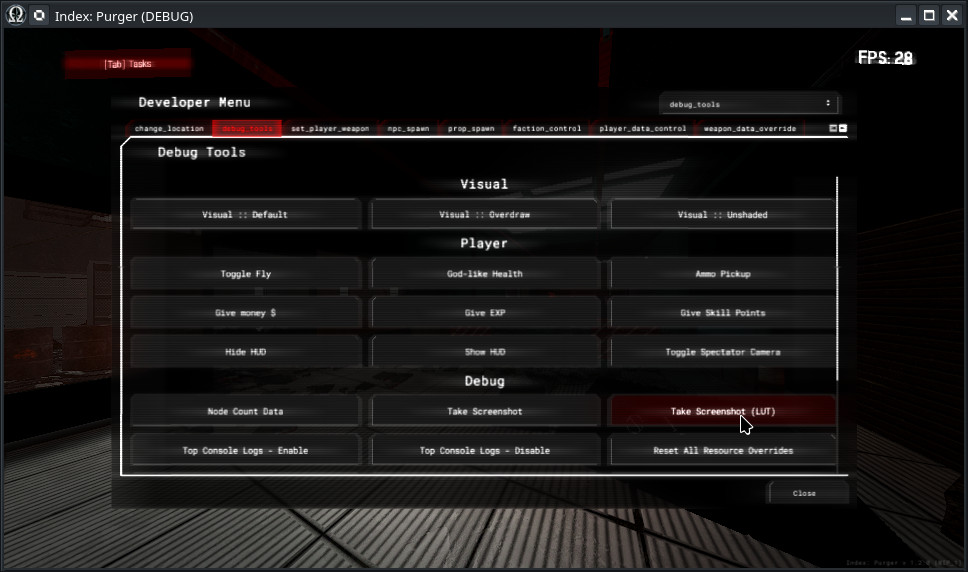
После нажатия этой кнопки твоя игра временно зависнет, чтобы сделать скриншот с образцом чистой LUT сверху. Тебе нужно найти
"user://screenshots"
, чтобы найти свой новый скриншот. Ты можешь сделать это так же с лёгкостью, как нажав эту кнопку в редакторе...
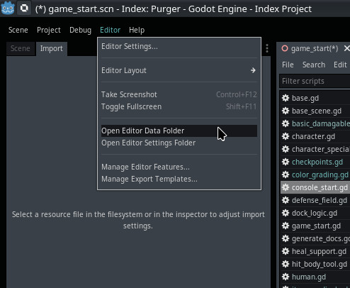
И затем найти свой новый крутой скриншот
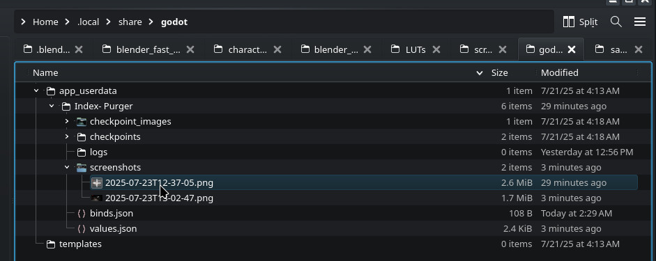
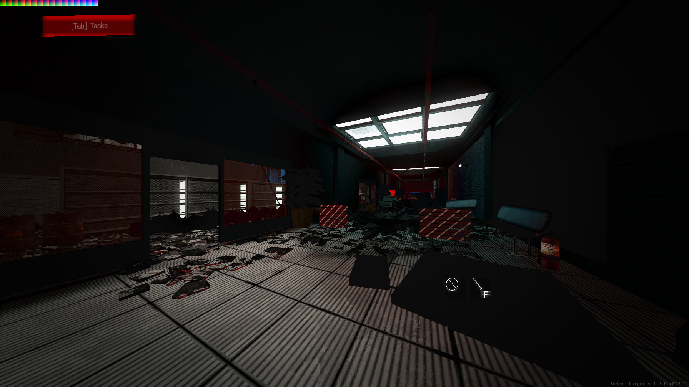
Это просто скриншот, конечно, но он содержит дополнительную информацию - identity LUT текстуру, размещённую в верхнем левом углу изображения
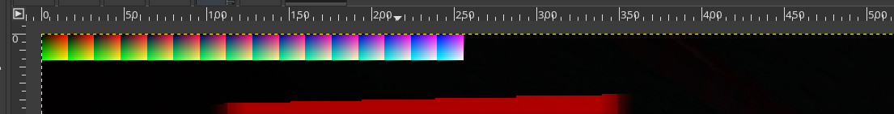
Это даёт тебе возможность взять этот скриншот и редактировать его по своему желанию. Однако тебе нужно знать: Ты не можешь использовать все операции твоего предпочитаемого графического редактора, а только те, которые влияют на ВСЕ цвета в твоём изображении. Эффекты вроде яркости, контрастности, насыщенности, кривых, тонирования, выделения и т.д. В GIMP ты можешь найти такие эффекты во вкладке "colors" здесь.
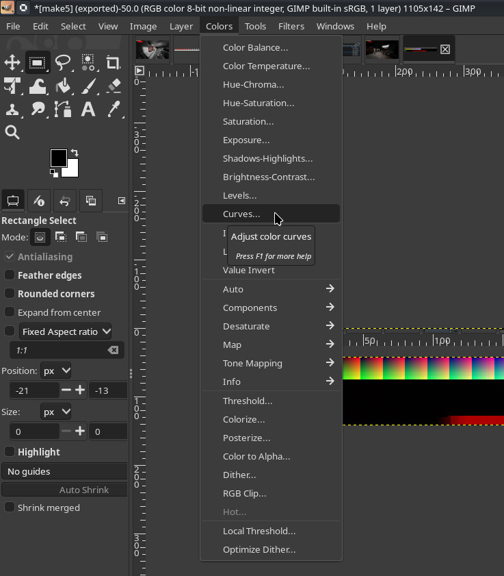
Предположим, что ты сделал все изменения, связанные с твоим скриншотом, как ты хотел, сделал его более холодным, например
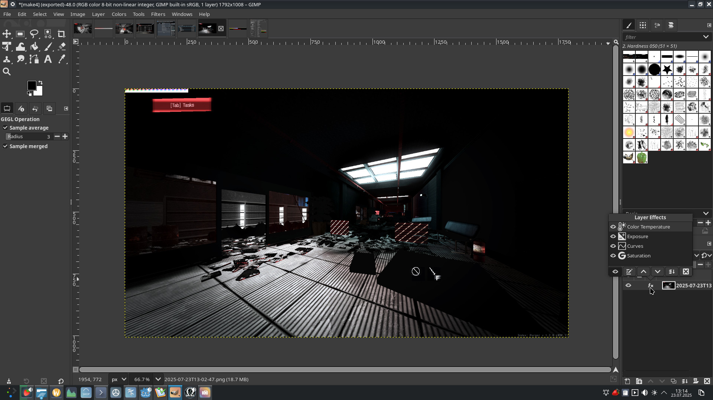
После этого ты просто применяешь все эффекты, выделяешь эту часть изображения, которая является самой LUT (заметь, как она тоже изменила свои цвета), и затем ты просто копируешь её и создаёшь новое изображение на основе данных из буфера обмена
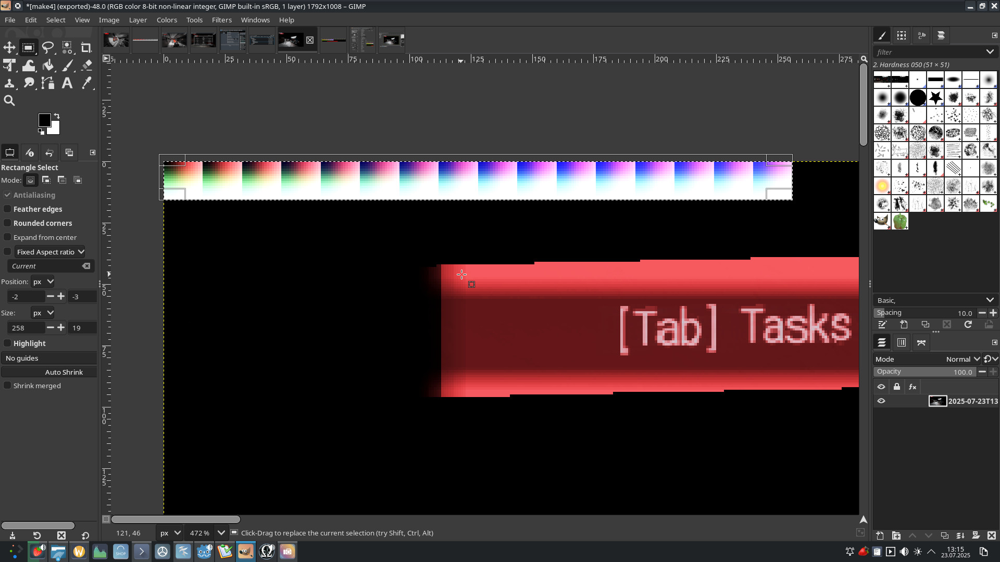
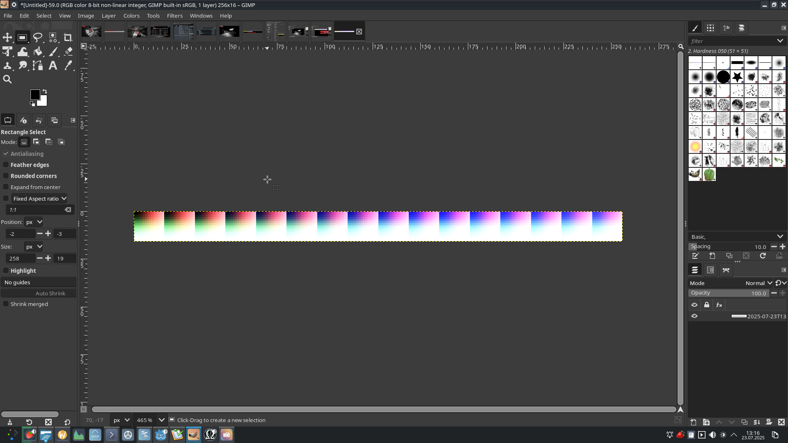
Последний шаг в графическом редакторе будет связан с экспортом твоей новой LUT-текстуры. Все LUT-текстуры сохраняются в
"res://modules/color_grading/assets/LUTs/"
как .PNG файлы изображений, и имя твоего файла изображения также устанавливает имя будущей LUT цветокоррекции
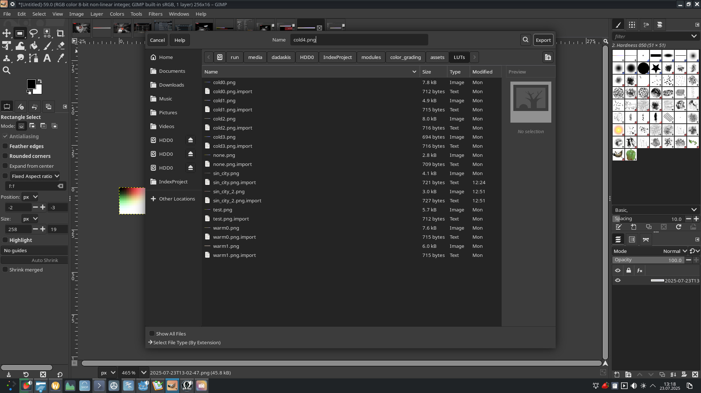
К сожалению, есть ещё один шаг, связанный с настройками импорта в редакторе. По умолчанию .PNG текстуры имеют VRAM сжатие, повторение и другие ненужные настройки, которые сделают LUT ещё более сломанной, чем она на самом деле есть. Чтобы исправить это, найди свою LUT в Godot и дважды щёлкни по ней...
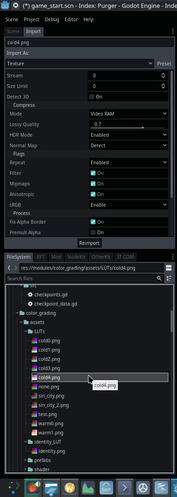
Измени настройки импорта на следующие...
Compression mode: Lossless
Repeat: Disabled
Filter: Disabled
Mipmaps: Disabled
Anisotropic: Disabled
sRGB: Disable
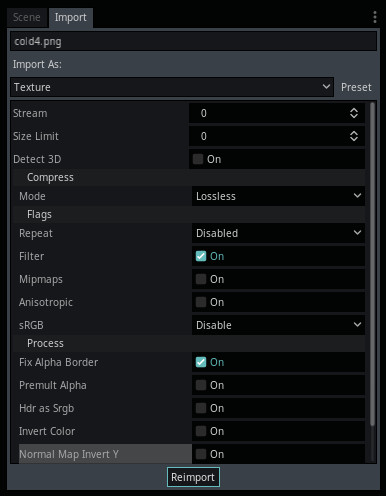
И... после всего этого... Всё должно быть готово. Ты можешь протестировать свою новую крутую цветокоррекцию в игре, используя дев-меню:
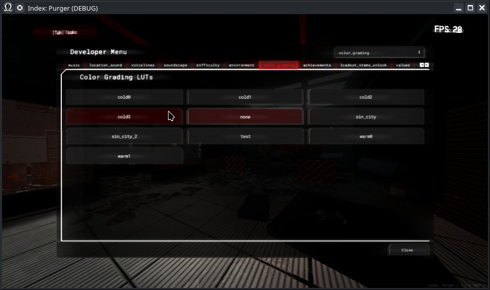
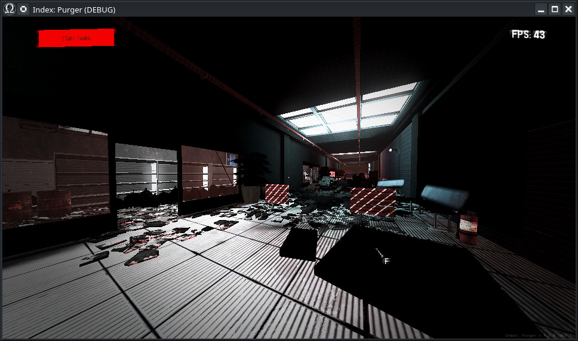
Ты можешь использовать цветокоррекцию несколькими способами. Во-первых, ты можешь установить LUT цветокоррекции в одном из экспортов
LocationBase
, что установит цветокоррекцию для всей локации. Это также включит превью твоей LUT в редакторе. Ты также можешь использовать AssetHelper, чтобы назначить LUT.
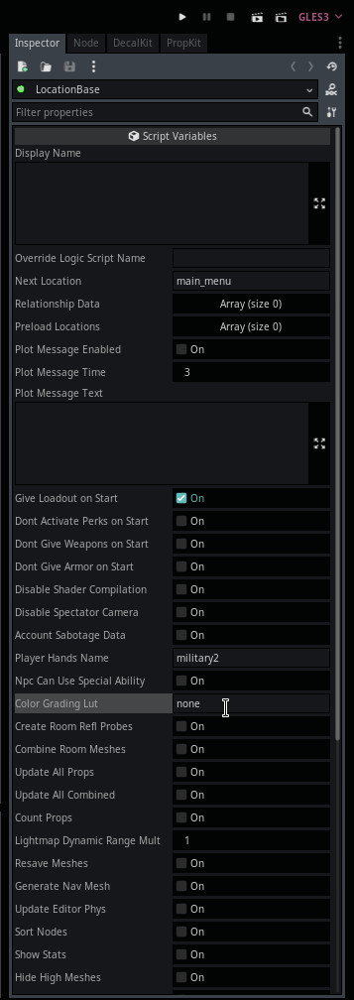
Или ты можешь использовать
st_change_location_lut_texture
, который позволит тебе переключать LUT на основе события локации.
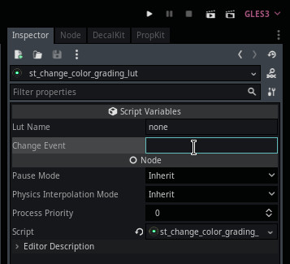
Веселись, меняя цвета. Цветокоррекция не имеет никакой производительной стоимости, так что ты можешь использовать её сколько угодно. Игроки, конечно, всё ещё имеют возможность полностью отключить цветокоррекцию, потому что... как кажется, всегда есть игроки, которые любят отключать её по какой-либо причине.
General Information
Root directories list
assets, docs, src
Nodes
Classes
None
Resources
None
Other Scripts
None